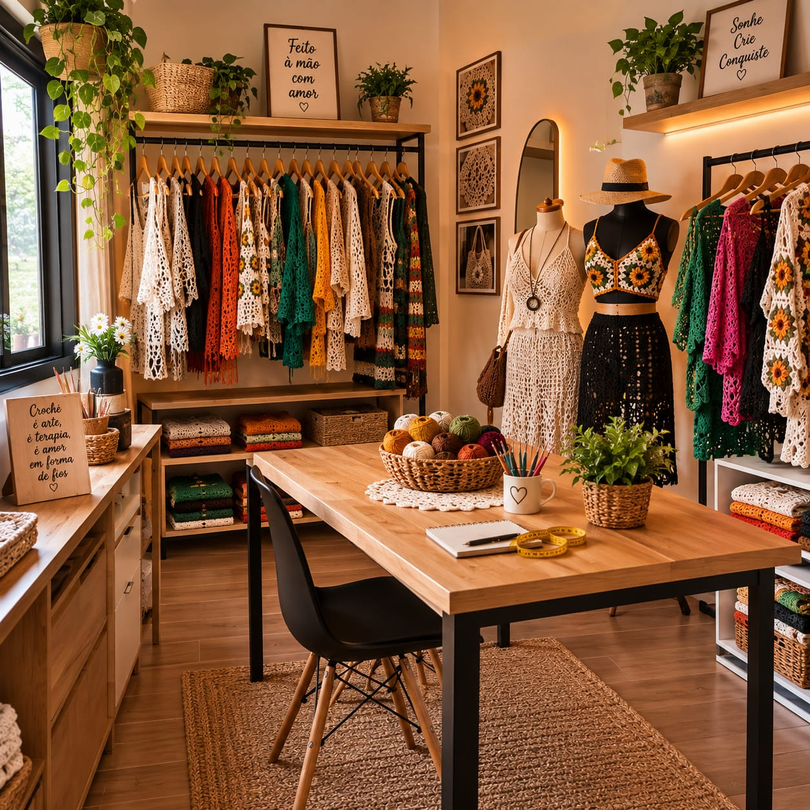
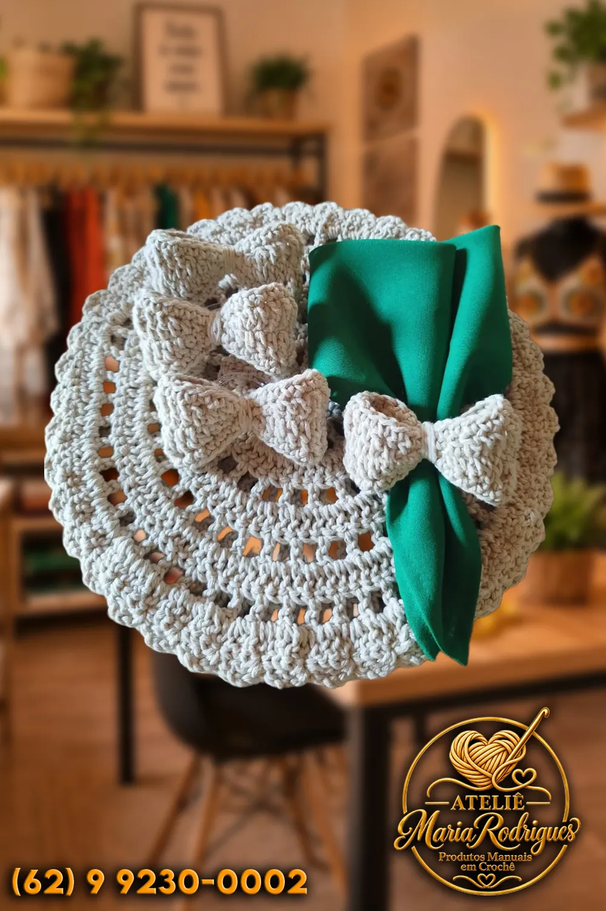

ATELIÊ MARIA RODRIGUES · CROCHÊ AUTORAL
Seu jeito,
em cada ponto.
Há coisas que só as mãos conseguem contar.
Peças em crochê para vestir, presentear e fazer parte da sua história.
Cada peça tem seu encanto.

FEITO À MÃO, PARA SER SEU✳
EM CADA CRIAÇÃO
01 / Bolsas que levam históriasPor Maria Rodrigues
UM MATERIAL, TANTAS POSSIBILIDADES
Crochê para os seus
pequenos e grandes momentos.
Da bolsa que acompanha o dia à mesa que reúne quem você ama. Encontre a sua inspiração.

O cuidado mora nos detalhes.CONHEÇA O ATELIÊ
Mãos que criam.
Peças que ficam.
No Ateliê Maria Rodrigues, o crochê ganha forma em roupas, bolsas, acessórios e detalhes para a casa. Cada criação nasce do encontro entre os fios e uma ideia.
Uma cor favorita, uma ocasião especial ou uma referência que você guardou. Conte para Maria o que imaginou e descubram juntas como transformar essa vontade em uma peça feita à mão.
Vamos dar forma à sua ideia ↗UM POUCO DO QUE JÁ SAIU DAS NOSSAS MÃOS
Fios que viraram criações.
Explore os detalhes. Encontrou uma inspiração?
Toque na foto para ver de perto e conversar com Maria.
Peças já criadas no ateliê. Novas encomendas podem ganhar outras cores e medidas.
DA SUA IDEIA ÀS MÃOS DE MARIA
Vamos criar algo seu?
Conte sua ideia
Escolha uma inspiração da galeria ou descreva a peça que você imaginou.
Combinem os detalhes
Cores, medidas, materiais, valor e prazo são definidos com Maria pelo WhatsApp.
A criação ganha forma
Com tudo combinado, é hora de transformar fios em uma peça com a sua personalidade.
SEU PRÓXIMO CROCHÊ COMEÇA AQUI
Você imagina.
Maria tece.
Conte um pouquinho do que deseja. Vamos organizar sua mensagem para você continuar a conversa pelo WhatsApp.
Prefere conversar diretamente?Fale com Maria ↗Cada encomenda é única. Valores, disponibilidade e prazos são combinados na conversa.
Feito de fios.
Cheio de significado.